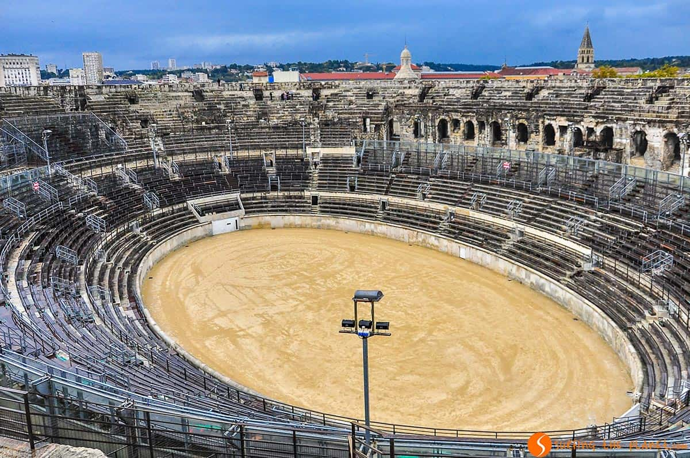
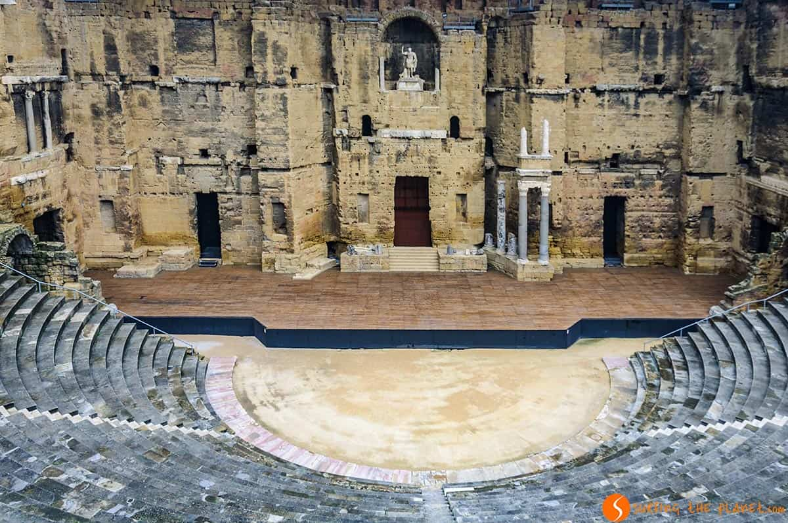

La Provenza
La Provenza es uno de estos lugares mágicos que inspiran a cualquier viajero. Viajar por la Provenza te aporta una experiencia muy variada con todos tipos de atracciones. Entre los lugares que visitar en la Provenza encontrarás de ruinas antiguas a castillos preciosos, creaciones sorprendentes de la naturaleza y mucho más. Además, en el maravilloso entorno natural de la Provenza encontrarás algunos de los pueblos más bonitos del sur de Francia.

Miluska: El Monasterio de Santa Catalina, un convento fundado en 1579, está amurallado en un complejo similar a una villa que cuenta con claustros y calles de adoquines. La Casa del Moral, una mansión del siglo XVIII convertida en museo, alberga mapas coloniales, antiguas monedas y arte religioso. El Museo Santuarios Andinos exhibe artefactos del Imperio Inca y una momia congelada que data del siglo XV. En el distrito suburbano de Yanahuara, un mirador elevado, que se destaca por sus arcos de piedra blanca, ofrece vistas panorámicas de la ciudad y los volcanes circundantes. Arequipa también es una vía de acceso para el Cañón del Colca, conocido por su profundidad, con senderos de excursión, sitios de campamento y vida salvaje, como el cóndor andino.
Aunque la ciudad no pertenece estrictamente a la región de Provenza, sino se encuentra fuera de sus fronteras en Languedoc-Roussillon, no te podrás perder esta preciosa ciudad en una visita a la Provenza. A Nimes se refiere muy a menudo con el nombre de «Roma francesa» por los vestigios antiguos de la época romana que alberga la ciudad.
Si te gustan ver ruinas antiguas, una de las ciudades que ver en la Provenza, es Arlés. Esta ciudad en las orillas del Ródano donde residió también Van Gogh durante una época, es otra ciudad llena de recuerdos de la época romana que junto con el casco medieval forma un conjunto protegido como Patrimonio de Humanidad por la UNESCO. Arlés entre otros monumentos cuenta con un precioso coliseo romano (aunque más deteriorado que lo de Nimes) que se llama las Arenas, un teatro antiguo, unas galerías subterráneas (Criptopórticos) y las termas de Constantino.
Aunque Nimes y Arlés albergan fantásticos monumentos de la época romana, para nosotros si hay un monumento que ver en la Provenza es sin suda el teatro antiguo de Orange. Es el único teatro latino de Europa que conserva el muro del escenario (los otros dos están en Siria y Túnez), además es casi intacto.
La ciudad con el casco histórico más impresionante que visitar en la Provenza es sin duda Avignon. Los lugares que destacan en este fantástico conjunto medieval son El Palacio de los Papas (la residencia de los papas durante el Papado de Aviñón), el precioso Puente de Avignon, la Catedral de Notre-Dame-des-Doms, el Petit Palais y las murallas de la ciudad.